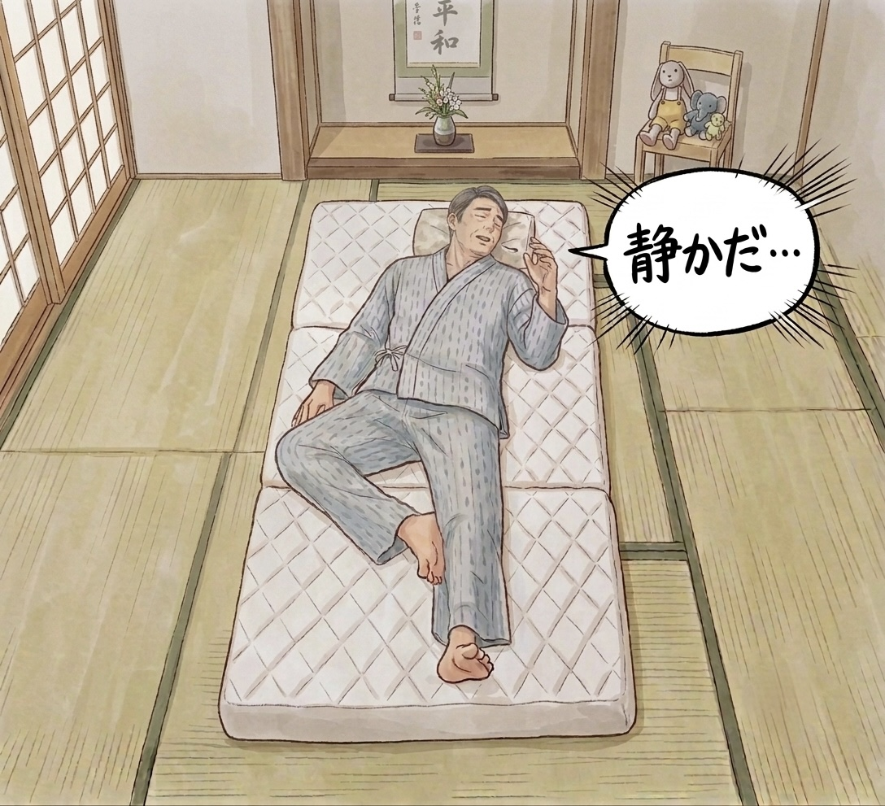

タスク説明

このイラストに対して「イラストの下の方角は南」か「南以外」どちらが正しいかを議論しています。
朝日が無く、上部に床の間があるなので南という推論があります。
この時、「朝日が無く、上部に床の間がある」という前提条件が必ず正しいと仮定した場合、上記の推論は妥当でしょうか？
文章とリンク先の記事に一通り目を通した上で，最終的にどれ程度正しいと思うか判断してください。
- 床の間は北か東側に設置することが多い。さらに、男性が静かな部屋で寝ていることから朝であるため、もし東側の場合、朝日が差し込んでいるはずである。朝日が差し込んでいる様子がないため、床の間は北側、窓は東側となり、下の方角は南となる。
https://wafujyutaku.jp/alcove/262